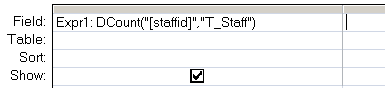

Count the number of records in a table/query.
Syntax
DCount ( expression, domain, [criteria] )
=DCount("[Field]", "Table", "[Field] = 'MyValue'")
Key
expression The field to count.
domain The set of records, a table or a query name.
criteria Equivalent to an (optional) WHERE clause.
Any field that is included in criteria must
also be a field in domain.
The DCount() function can be used in VBA or in an SQL query.
Examples
In a query:

In VBA:
DCount("OrderID", "T_Orders", "SupplierID = 64 ")
This is equivalent to:
SELECT DCount([T_Orders].OrderID)
FROM [T_Orders]
WHERE (([T_Orders].SupplierID)=64);
“If you are planning for a year, sow rice; if you are planning for a decade, plant trees; if you are planning for a lifetime, educate people” ~ Chinese Proverb
Related:
Count (SQL) - Count records
Nz - Detect a NULL value or Zero Length string.